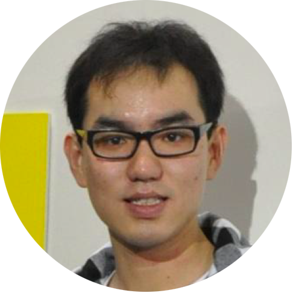

【PUBLICATIONS】 【GITHUB】 【LINKEDIN】
 Yijun Li
Senior Research Scientist
Adobe Research
Email: yijli [at] adobe.com
I am a researcher at Adobe. I obtained the Ph.D. degree at University of California Merced, working with Prof. Ming-Hsuan Yang. Before that, I received the M.S. degree at Shanghai Jiao Tong University and B.S. degree at Zhejiang University.
My research interests lie in the field of computer vision and machine learning, particularly in image and video synthesis. The goal of my work is to develop effective computational models to facilitate more realistic and stunning creations, which will bring brand new user experiences and transform the ways we communicate and collaborate. I have been awarded Facebook Fellowship (2019), Adobe Fellowship (2018), and Snap Fellowship (2018).
Internship: Adobe Research is offering internships for self-motivated graduate students to engage in industrial research and routinely publish at top academic conferences. Please drop me an email with your resume if you're interested in working with me.
Area Chair: CVPR (2023, 2024), NeurIPS 2023, ICCV 2023, WACV (2023, 2024), BMVC (2023, 2024)
Senior Program Committee: IJCAI 2021, AAAI (2022, 2023)
Session Chair: WACV 2020
Workshop Co-organizer: AI for Content Creation (AI4CC) at CVPR (2023, 2024)
Reviewer: Mainstream conferences (e.g., CVPR, ICCV, ECCV) and journals (e.g., TPAMI, IJCV)
Text2Vector in Firefly and Illustrator 2024
Color Matching in Premiere Elements 2024 and Photoshop Elements 2024
Video Artistic Effects in Premiere Elements 2023
Old Photo Restoration in Neural Filters of Photoshop 2023
Image Artistic Effects in Photoshop Elements 2022
Style Transfer in Neural Filters of Photoshop 2021, 2022
Color Transfer in Neural Filters of Photoshop 2022
Lips Retouch in Photoshop Express 2022
Makeup Transfer in Neural Filters of Photoshop 2021, 2022